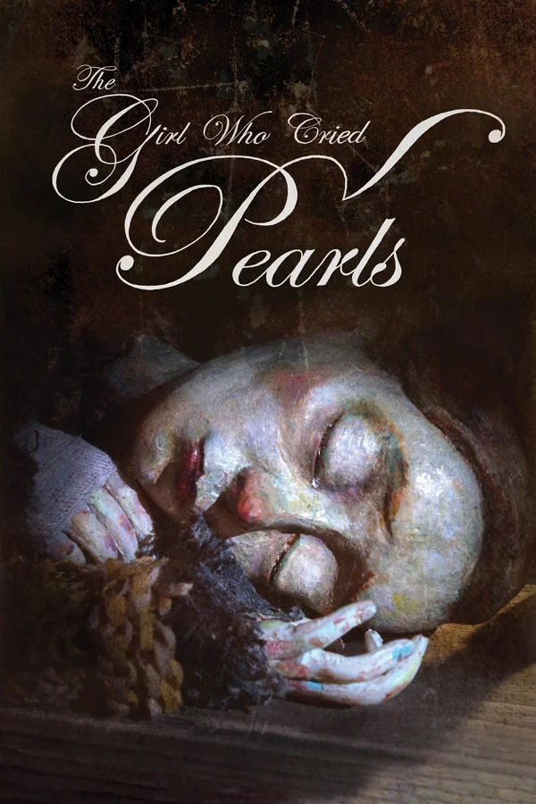
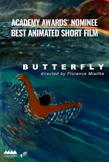
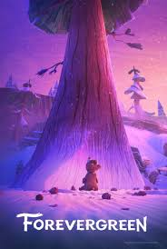
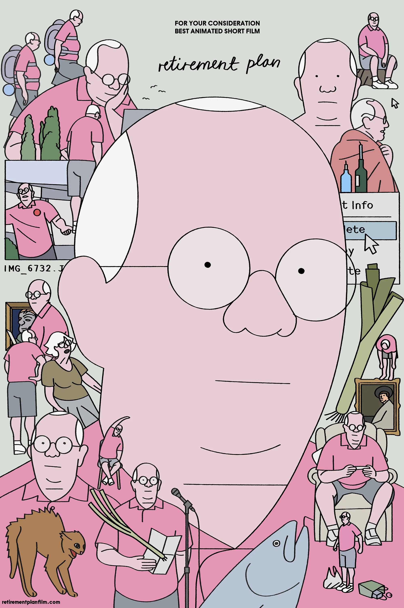
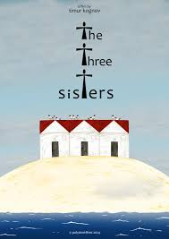

98th Annual Academy Awards
Melhor Curta de Animação
Conheça os candidatos à Premiação do Oscar 2026 por Melhor Curta de Animação.

Vencedor
The Girl Who Cried Pearls
Direção: Chris Lavis e Maciek Szczerbowski
Descrição: Um curta de fantasia sombria com uma estética que remete às pinturas barrocas. A história acompanha uma jovem cuja tristeza física se transforma em pérolas preciosas, atraindo a ganância de sua vila.
Destaques: O uso de iluminação dramática (claro-escuro) e uma animação fluida que parece pintura a óleo em movimento. É o favorito para quem busca uma experiência visual artística e densa.

Butterfly (Papillon)
Direção: Florence Miailhe
Descrição: Um curta francês que utiliza a técnica de pintura sobre vidro para narrar a vida de um nadador que atravessa diferentes fases da história e da memória, comparando sua jornada à metamorfose de uma borboleta.
Destaques: A beleza técnica e a fluidez das transições. O filme é aclamado por sua capacidade de evocar nostalgia e a sensação de "sonho acordado", característica forte das animações europeias premiadas.

Forevergreen
Direção: Terry Gilliam (em um retorno à animação) ou um talento da escola CalArts.
Descrição: Uma fábula ecológica surrealista sobre a última árvore da Terra e o robô encarregado de protegê-la em um mundo de plástico e sucata.
Destaques: O design de produção é inventivo, misturando elementos de stop-motion com animação digital. A mensagem ambiental é direta, mas entregue com um humor visual peculiar e um final devastador.

Retirement Plan
Direção: Animadores da equipe da The New Yorker ou de estúdios independentes como o Titmouse.
Descrição: Uma comédia satírica e mordaz sobre um supervilão tentando se adaptar à vida em uma casa de repouso comum. Ele precisa lidar com a perda de seus poderes e a burocracia do sistema de saúde.
Destaques: O roteiro é o ponto mais forte, repleto de diálogos rápidos e humor ácido. A animação é mais simples e cartunesca, focando na expressividade e no timing cômico.

The Three Sisters
Direção: Konstantin Bronzit.
Descrição: Um drama familiar contado através de diferentes estilos de animação para cada irmã, representando suas perspectivas únicas sobre uma tragédia compartilhada no passado.
Destaques: A inovação estrutural. Ao mudar o estilo visual (lápis de cor, colagem e 3D) conforme a narradora muda, o curta explora a subjetividade da memória de forma brilhante.